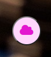
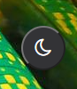
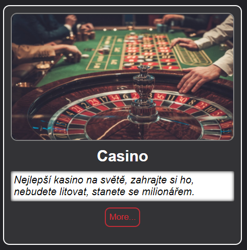
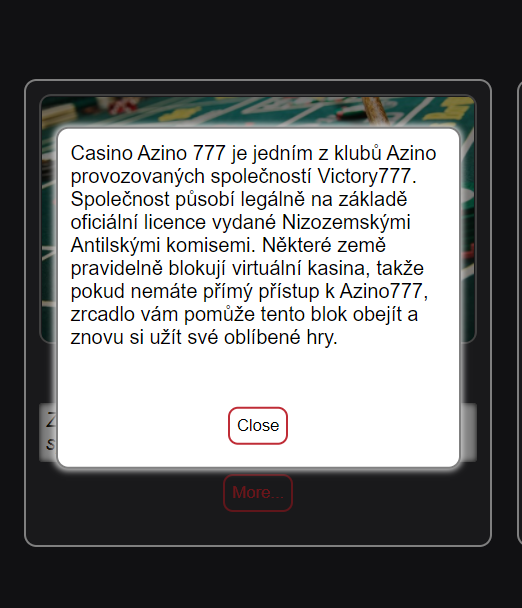
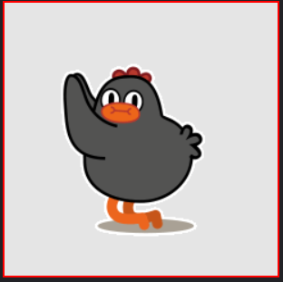
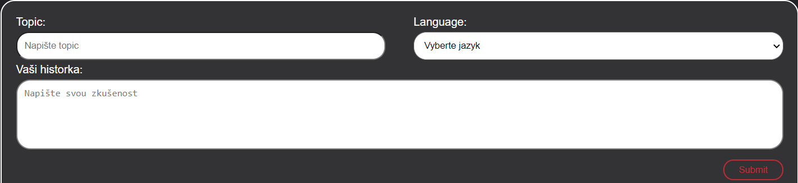
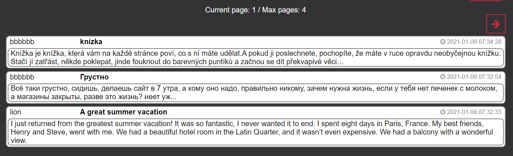
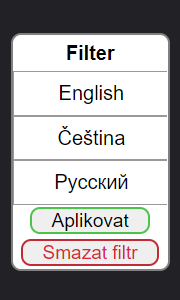

Zadani
Měl jsem za úkol vytvořit web s hazardními hrami, na kterém jsem musel mluvit o některých zařízeních, jako je kasino, hazardní klub a loterie.
Úkolem bylo také vytvořit stránku, kde mohou uživatelé zanechávat své komentáře nebo příběhy související s hazardními hrami.
A samozřejmě, aby nevznikl chaos, bylo nutné se zaregistrovat a přihlásit, aby někteří náhodní lidé nemohli něco nechat mimo téma.
Architektura
\css -- css styles
font-awesome.min.js -- font awesome icons css style
skinovatelnost.css -- dark theme
style.css -- main theme
print.css -- styl pro tisk
\data -- php scripty
auth.php -- zpracování dat registrace a vstupu
comment_page.php -- strankování a práce z databazi
comments.php -- zpracování dat zkušeností
connect_data_base.php -- připojení k databazi
skinsave.php -- zachování stylu
\fonts -- font awesome icons
fontawesome-webfont.ttf
fontawesome-webfont.woff
fontawesome-webfont.woff2
\images -- ruzné obrázky
\dokumentace -- Obrazky pro dokumentace
back.jpg -- background image
favicon.ico -- site icon
background.jpg -- background hlavni stranky
casino.jpg
hazardni_hry.jpg
loterie.jpg
\js -- javascript
diamond.js -- adding on diamonds on menu items hover
jquery_3.5.1.min.js -- jQuery plugin
skin.js -- změna stylu
validate.js -- ověřování inputů
spolecnosti.js - Creating a modal window
dokumentace.html - dokumentace
footer.php -- dolní čast stranky
headrer.php -- horní čast stranky
index.php -- hlavní stranka
onlinegane.php -- stranka "Online hazardní hry"
reg.php -- stranka "Registrace"
sign-in.php -- stranka "Sign-in"
zkusenosti.php -- stranka "Zkušenosti"
Hlavní scripty
PHP
connect_data_base.php - connecting to Database (using MySQLi)
auth.php - registrace and sign-in forms processing
comments.php - comments form processing
comment_page.php - realizace strankovani, filtru a vyběru komentařu z databazi
skinsave.php - saveing choosen skin
JavaScript
diamond.js - includes some functions to add icons near menu elements
skin.js - change actual style
validate.js - iclude some function to check forms
spolecnosti.js - Creating a modal window
Popis uloziste dat
Tabulka `comments` je propojena s tabulkou `user` pomocí `user_id`.
Table comments:
`id` int NOT NULL AUTO_INCREMENT,
`user_id` int NOT NULL,
`cas` timestamp NOT NULL,
`topic` text NOT NULL,
`comment` text NOT NULL,
`language` varchar(10) NOT NULL
PRIMARY KEY (`id`),
KEY `user_id` (`user_id`)
Table user:
`id` int NOT NULL AUTO_INCREMENT,
`email` varchar(255) NOT NULL,
`username` varchar(255) NOT NULL,
`password` varchar(255) NOT NULL
PRIMARY KEY (`id`),
UNIQUE KEY `username` (`username`),
UNIQUE KEY `email` (`email`)
Prirucka
Hlavni stranka
Na hlavní stránce můžete přejít na stránku Spolecnosti nebo na stránku Zkušenosti,
pokud kliknete na jedno z těchto tlačítek (vlevo je Společnosti, na pravé straně Zkušenosti).

Také v pravém dolním rohu najdete tlačítko pro změnu stylu ze světlého na tmavý a naopak.
 
Spolecnosti
Na stránce Spolecnosti si můžete přečíst stručné informace o různých spolecnostech (kasino, hazardní klub, loterie)
a pokud chcete zjistit více informací, klikněte na tlačítko 'More' a objeví se nové okno s textem.


Online Hazardni hry
Tuto stránku jsem považoval za zbytečnou, ale nechtěl jsem ji mazat, a tak jsem přidal taneční kuřata.

Zkusenosti
Na cestě můžete napsat svůj příběh týkající se hazardních her nebo poradit ostatním uživatelům,
můžete také sledovat komentáře ostatních lidí a dokonce je filtrovat podle jazyka.
Chcete-li zanechat komentáře, musíte se zaregistrovat a přihlásit ke svému účtu


chcete-li filtrovat komentáře podle jazyka, musíte vybrat jazyk a kliknout na tlačítko Aplikovat, pokud chcete znovu zobrazit všechny komentáře, stačí kliknout na tlačítko Smazat filtr

Sign-in
Na přihlašovací stránce se můžete přihlásit na web pomocí svého e-mailu a hesla. Pokud nejste registrováni, projděte prosím proces registrace.
Požadované údaje:
- email (např. email@exmaple.com)
- password (minimalní delka 6 znaků)

Registrace
Na registrační stránce se můžete zaregistrovat k dalším akcím na webu (např. abyste mohli publikovat svoje osobní zkušenosti).
Požadované údaje:
- email (např. email@exmaple.com)
- username (minimalní delka 3 znaků)
- password (minimalní delka 6 znaků)